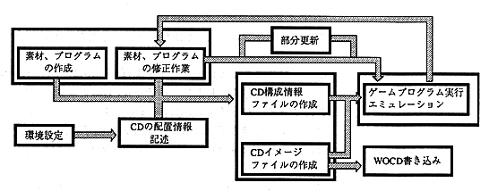

★PROGRAMMER'S GUIDE
★バーチャルCDシステム
★PROGRAMMER'S GUIDE
★バーチャルCDシステム
次にバーチャルCDエミュレータの主な機能を簡単に示します。
これらのどのエミュレーションを実行するかは、バーチャルCDエミュレータ起動時にファイルの有無、およびバーチャルCDエミュレータ起動のコマンド行のパラメータによって、バーチャルCDエミュレータが判断します。
ファイルの有無の識別にはファイルの拡張子を用い、そのボディ部分はバーチャルCDエミュレータ起動のコマンド行のパラメータで指定することになっています。
CDエミュレーションを行うには、バーチャルCDエミュレータプログラムやCDイメージを作成する前処理プログラム等が必要になります。
図-2. 作業の大まかな流れ

★PROGRAMMER'S GUIDE
★バーチャルCDシステム